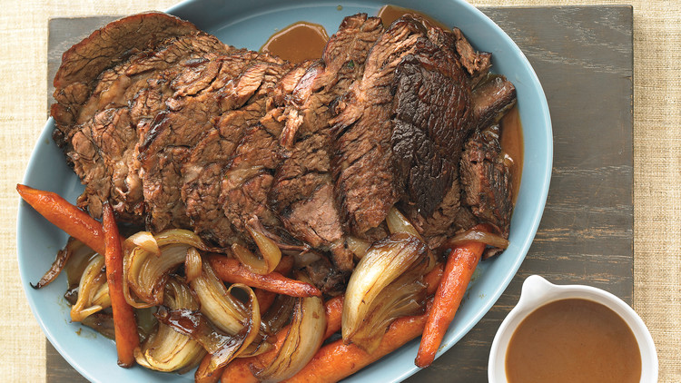

Slow Cooker Pot Roast

Description
Get a head start on dinner with this fresh take on a slow-simmered, all-in-one meal that makes clean-up a
breeze.
Ingredients
- 1 tablespoon cornstarch
- 8 medium carrots, cut into thirds
- 2 medium onions, each cut into 8 wedges
- Coarse salt and ground pepper
- 1 beef chuck roast (3 pounds), trimmed of excess fat
- 2 tablespoons Worcestershire sauce
Steps
- In slow cooker, stir together cornstarch and 2 tablespoons cold water until smooth. Add carrots and
onions; season with salt and pepper, and toss.
- Sprinkle roast with 1 teaspoon salt and 1/2 teaspoon pepper; place on top of vegetables, and drizzle with
Worcestershire. Cover; cook on high, 6 hours (or on low, 10 hours).
- Transfer roast to a cutting board; thinly slice against the grain. Place vegetables in a serving dish;
pour pan juices through a fine-mesh sieve, if desired. Serve roast with vegetables and pan juices.